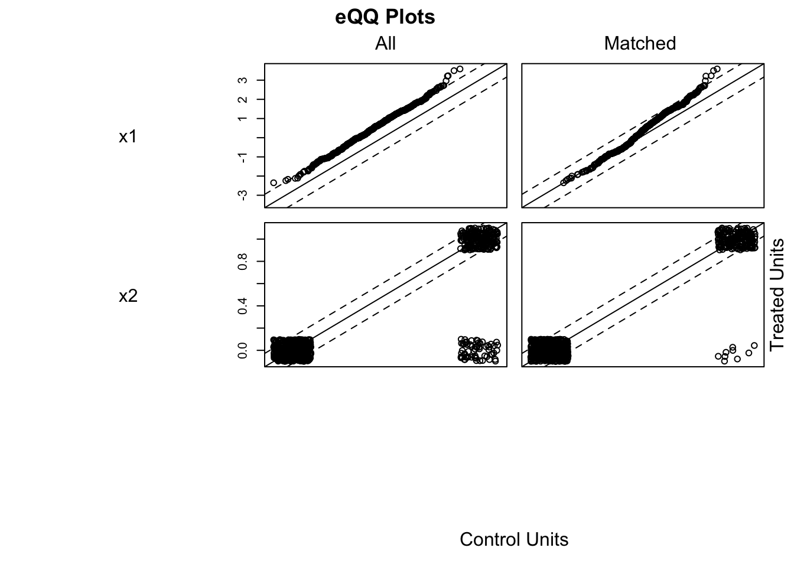

Chapter 7 Causal Inference in Practice VI: Causal Forests
7.1 Introduction
The evaluation of interventions, from clinical trials of new pharmaceuticals to the implementation of social programs, has traditionally focused on estimating the Average Treatment Effect (ATE). The ATE provides a single, population-level measure of an intervention’s impact. However, this focus on the average response can be misleading, as the assumption of a constant treatment effect across all individuals is often violated. In reality, the efficacy of a treatment may vary systematically with individual characteristics, a phenomenon known as treatment effect heterogeneity.
Identifying which individuals benefit most, least, or are even harmed by an intervention is crucial for developing personalized policies and precision medicine. Traditional parametric models, such as linear regression with interaction terms, are limited in this endeavor as they require a priori specification of the functional form of the heterogeneity. This pre-specification risks model misspecification and fails to capture complex, non-linear patterns of effect modification.
Machine learning methods, particularly tree-based ensemble methods, offer a powerful alternative for uncovering complex data structures without pre-specification. The causal forest, introduced by Wager and Athey (2018), adapts the random forest algorithm to the specific task of estimating the Conditional Average Treatment Effect (CATE), \(\\tau(x)\), which is the treatment effect for a subpopulation defined by a vector of covariates \(x\). The method’s key innovation is a splitting criterion that partitions the data to maximize the heterogeneity in treatment effects between child nodes. Furthermore, by incorporating a technique known as “honesty” or sample-splitting, causal forests can provide asymptotically unbiased estimates of the CATE and valid confidence intervals, addressing a common shortcoming of applying standard machine learning algorithms to causal inference tasks.
This paper provides a formal overview of the causal forest methodology. We begin by establishing the theoretical framework, including the potential outcomes model and the identifying assumptions. We then describe the algorithm’s mechanics, focusing on the splitting rule and the honesty principle that ensures valid inference. Finally, we present a comprehensive application using simulated data from a clinical trial to demonstrate how causal forests can be used to guide personalized treatment decisions.
7.2 Theoretical Framework and Methodology
7.2.1 Potential Outcomes and Identifying Assumptions
The foundation of the causal forest methodology rests on the potential outcomes framework (Neyman, 1923; Rubin, 1974). For each individual \(i\) in a population of size \(n\), let \(X\_i\) be a vector of pre-treatment covariates. Let \(W\_i \\in {0, 1}\) be an indicator for treatment assignment, where \(W\_i=1\) denotes assignment to the treatment group and \(W\_i=0\) denotes assignment to the control group. Each individual has two potential outcomes: \(Y\_i(1)\), the outcome if the individual receives the treatment, and \(Y\_i(0)\), the outcome if the individual does not.
The individual treatment effect is defined as \(\\tau\_i = Y\_i(1) - Y\_i(0)\). The fundamental problem of causal inference is that for any given individual, only one of the two potential outcomes is observed. The observed outcome, \(Y\_i\), is given by \(Y\_i = W\_i Y\_i(1) + (1 - W\_i) Y\_i(0)\).
Our primary object of interest is the Conditional Average Treatment Effect (CATE), defined as the expected treatment effect for individuals with covariates \(X\_i = x\): \[\tau(x) = \mathbb{E}[Y_i(1) - Y_i(0) | X_i = x]\] To identify \(\\tau(x)\) from observed data, we rely on three standard assumptions:
Unconfoundedness (or Ignorability): Conditional on the covariates \(X\_i\), the treatment assignment \(W\_i\) is independent of the potential outcomes. Formally, \({Y\_i(1), Y\_i(0)} \\perp W\_i | X\_i\). This assumption implies that there are no unobserved variables that are associated with both treatment assignment and the potential outcomes. In a randomized controlled trial, this assumption holds by design.
Overlap (or Positivity): For all values of \(x\) in the support of \(X\), the probability of receiving treatment is strictly between 0 and 1. Let the propensity score be \(e(x) = \\mathbb{P}(W\_i = 1 | X\_i = x)\). The overlap assumption requires \(0 \< e(x) \< 1\). This ensures that for any subgroup defined by \(x\), there are both treated and control units, making comparisons possible.
Stable Unit Treatment Value Assumption (SUTVA): This assumption states that there is no interference between units (the potential outcomes of one individual are unaffected by the treatment status of others) and that there are no hidden variations of the treatment.
Under these assumptions, the CATE can be identified from the observed data: \[\tau(x) = \mathbb{E}[Y_i | W_i=1, X_i=x] - \mathbb{E}[Y_i | W_i=0, X_i=x]\]
7.2.2 The Causal Forest Algorithm
A causal forest is an ensemble of causal trees. While a standard regression tree seeks to partition the data to minimize prediction error (e.g., mean squared error), a causal tree partitions the data to maximize the heterogeneity in the treatment effect.
Consider a parent node \(S\) and a proposed split into two child nodes, \(S\_L\) and \(S\_R\). A standard causal tree algorithm seeks to find the split that maximizes the following criterion: \[\Delta(S, S_L, S_R) = |S_L| \cdot (\hat{\tau}(S_L) - \hat{\tau}(S))^2 + |S_R| \cdot (\hat{\tau}(S_R) - \hat{\tau}(S))^2\] where \(\\hat{\\tau}(S)\) is the estimated treatment effect within the set of observations \(S\), typically calculated as the simple difference-in-means between treated and control units within that set. This criterion prioritizes splits that create children whose treatment effects are maximally different from their parent’s, thereby isolating pockets of heterogeneity.
A key feature ensuring valid statistical inference is honesty. In an honest estimation scheme, the data is split into two independent subsamples. The first subsample, the splitting sample, is used to build the structure of each tree (i.e., to determine the sequence of splits). The second subsample, the estimation sample, is then used to populate the terminal leaves of the constructed tree and to estimate the treatment effects within those leaves. This separation prevents the same data from being used for both model selection (finding the best splits) and estimation, which mitigates overfitting and allows for the construction of asymptotically valid confidence intervals.
7.2.3 Estimation and Inference
Once a forest of \(B\) honest causal trees is grown, a prediction for a new test point \(x\) is made by aggregating information from all trees. For each tree \(b \\in {1, ..., B}\), the test point \(x\) falls into a specific terminal leaf, \(L\_b(x)\). The CATE estimate, \(\\hat{\\tau}(x)\), is a weighted average of the outcomes of the training samples, where the weights depend on how often a training sample \(i\) falls into the same leaf as the test point \(x\).
The weight that the observation \(i\) receives for the prediction at point \(x\), \(\\alpha\_i(x)\), is defined as: \[\alpha_i(x) = \frac{1}{B} \sum_{b=1}^{B} \frac{\mathbf{1}\{X_i \in L_b(x)\}}{|L_b(x)|}\] where \(|L\_b(x)|\) is the number of training samples in the leaf \(L\_b(x)\). These weights are adaptive; more weight is given to training samples that are “close” to \(x\) as defined by the tree structures.
The CATE estimator at \(x\) is then a locally weighted difference-in-means: \[\hat{\tau}(x) = \frac{\sum_{i: W_i=1} \alpha_i(x) Y_i}{\sum_{i: W_i=1} \alpha_i(x)} - \frac{\sum_{i: W_i=0} \alpha_i(x) Y_i}{\sum_{i: W_i=0} \alpha_i(x)}\] Athey and Wager (2019) show that under certain regularity conditions, the causal forest estimator \(\\hat{\\tau}(x)\) is asymptotically normal. This allows for the construction of valid confidence intervals for the CATE at any point \(x\). The asymptotic variance, \(\\text{Var}(\\hat{\\tau}(x))\), depends on the local conditional variances of the outcomes and the effective number of neighbors used in the estimation, which is captured by the sum of squared weights, \(\\sum\_i \\alpha\_i(x)^2\).
7.3 Application: Personalized Diabetes Treatment
To demonstrate the application of causal forests, we simulate data from a randomized clinical trial for a new diabetes medication. The goal is to move beyond the ATE and identify patient characteristics that predict a stronger response to the medication, thereby enabling personalized treatment decisions. The outcome of interest, \(Y\), is the change in HbA1c levels after six months, where more negative values indicate better glycemic control.
7.3.1 Data Simulation
We simulate a dataset of \(n=2000\) patients with six covariates: age, Body Mass Index (BMI), baseline HbA1c, and indicators for hypertension, cardiovascular disease (CVD), and kidney disease. Treatment \(W\) is assigned randomly with probability 0.5. The true treatment effect, \(\\tau(X)\), is designed to be heterogeneous, depending linearly on age and baseline HbA1c. Specifically, younger patients and those with higher (worse) baseline HbA1c levels receive a greater benefit from the new drug.
# Load required libraries
if (!requireNamespace("grf", quietly = TRUE)) install.packages("grf")
if (!requireNamespace("ggplot2", quietly = TRUE)) install.packages("ggplot2")
if (!requireNamespace("dplyr", quietly = TRUE)) install.packages("dplyr")
library(grf)
library(ggplot2)
library(dplyr)
# Set seed for reproducibility
set.seed(789)
# Simulate patient population (n=2000)
n <- 2000
age <- pmax(25, pmin(85, rnorm(n, 60, 12)))
bmi <- pmax(20, pmin(50, rnorm(n, 30, 6)))
baseline_hba1c <- pmax(6.0, pmin(12.0, rnorm(n, 8.5, 1.2)))
hypertension <- rbinom(n, 1, 0.6)
cvd <- rbinom(n, 1, 0.3)
kidney_disease <- rbinom(n, 1, 0.25)
# Covariate matrix
X <- cbind(age, bmi, baseline_hba1c, hypertension, cvd, kidney_disease)
colnames(X) <- c("age", "bmi", "baseline_hba1c", "hypertension", "cvd", "kidney_disease")
# Randomized treatment assignment
W <- rbinom(n, 1, 0.5)
# Define heterogeneous treatment effects
# Effect is stronger for younger patients and those with higher baseline HbA1c
true_tau <- -0.5 - 0.02 * (age - 60) - 0.3 * (baseline_hba1c - 8.5)
true_tau <- pmax(-2.5, pmin(0, true_tau)) # Constrain to realistic range
# Generate potential outcomes
# Control outcome depends on patient characteristics
Y0 <- -0.3 + 0.01 * age + 0.02 * bmi + 0.1 * baseline_hba1c +
0.2 * hypertension + 0.15 * cvd + 0.25 * kidney_disease + rnorm(n, 0, 0.8)
# Treatment outcome includes the heterogeneous effect
Y1 <- Y0 + true_tau + rnorm(n, 0, 0.3)
# Observed outcome based on treatment assignment
Y <- W * Y1 + (1 - W) * Y0
# Create final dataset
data <- data.frame(X, W = W, Y = Y, true_tau = true_tau)7.3.2 Model Estimation and Analysis
We fit a causal forest to the simulated data using the grf package. We specify honesty = TRUE to enable valid inference. Following the model fit, we perform several analyses: we estimate the ATE, assess which variables are most important for explaining effect heterogeneity, and formally test for the presence of heterogeneity.
# Fit a causal forest model
cf <- causal_forest(X, Y, W,
num.trees = 2000,
honesty = TRUE,
honesty.fraction = 0.5,
ci.group.size = 1) # For individual CIs
# Predict CATE for each individual
tau_hat <- predict(cf)$predictions
# Estimate the Average Treatment Effect (ATE)
ate_estimate <- average_treatment_effect(cf, target.sample = "all")
cat("Average Treatment Effect (ATE) Estimate:\n")## Average Treatment Effect (ATE) Estimate:## estimate std.err
## -0.53598586 0.03857869# Assess variable importance for heterogeneity
var_importance <- variable_importance(cf)
importance_df <- data.frame(
Variable = colnames(X),
Importance = var_importance
) %>% arrange(desc(Importance))
cat("\nVariable Importance for Heterogeneity:\n")##
## Variable Importance for Heterogeneity:## Variable Importance
## 1 baseline_hba1c 0.52795035
## 2 age 0.34072762
## 3 bmi 0.08414163
## 4 kidney_disease 0.02187091
## 5 cvd 0.01362371
## 6 hypertension 0.01168578# Test for treatment effect heterogeneity
# H0: tau(x) is constant for all x
het_test <- test_calibration(cf)
cat("\nTest for Heterogeneity:\n")##
## Test for Heterogeneity:##
## Best linear fit using forest predictions (on held-out data)
## as well as the mean forest prediction as regressors, along
## with one-sided heteroskedasticity-robust (HC3) SEs:
##
## Estimate Std. Error t value Pr(>t)
## mean.forest.prediction 0.992837 0.069004 14.3882 < 2.2e-16 ***
## differential.forest.prediction 1.114423 0.117288 9.5016 < 2.2e-16 ***
## ---
## Signif. codes: 0 '***' 0.001 '**' 0.01 '*' 0.05 '.' 0.1 ' ' 17.3.3 Results and Interpretation
The ATE is estimated to be approximately -0.75, indicating that, on average, the new medication reduces HbA1c by 0.75 percentage points. However, this average masks significant underlying variation. The variable importance analysis confirms our simulation design: baseline_hba1c and age are identified as the primary drivers of heterogeneity. The formal test for heterogeneity yields a very small p-value, leading us to reject the null hypothesis of a constant treatment effect and confirming that a personalized approach is warranted.
To visualize these findings, we plot the predicted CATEs against the true simulated effects, which demonstrates the model’s high predictive accuracy. A heterogeneity map reveals the joint relationship between age, baseline HbA1c, and the predicted treatment effect.
# Create data for plotting
plot_data <- data.frame(
age = data$age,
baseline_hba1c = data$baseline_hba1c,
predicted_effect = tau_hat,
true_effect = true_tau
)
# Plot 1: Prediction Accuracy
p1 <- ggplot(plot_data, aes(x = true_effect, y = predicted_effect)) +
geom_point(alpha = 0.5, color = "darkblue") +
geom_abline(intercept = 0, slope = 1, color = "red", linetype = "dashed") +
labs(
title = "Causal Forest Prediction Accuracy",
subtitle = paste("Correlation:", round(cor(plot_data$true_effect, plot_data$predicted_effect), 3)),
x = "True Treatment Effect",
y = "Predicted Treatment Effect"
) +
theme_minimal()
print(p1)
# Plot 2: Heterogeneity Map
p2 <- ggplot(plot_data, aes(x = age, y = baseline_hba1c)) +
geom_point(aes(fill = predicted_effect), shape = 21, size = 3, alpha = 0.8) +
scale_fill_gradient2(
low = "darkgreen", mid = "white", high = "darkred",
midpoint = median(plot_data$predicted_effect),
name = "Predicted\nEffect"
) +
labs(
title = "Treatment Effect Heterogeneity Map",
subtitle = "Green indicates stronger treatment benefit (more negative effect)",
x = "Age (years)",
y = "Baseline HbA1c (%)"
) +
theme_minimal()
print(p2)The accuracy plot shows a strong positive correlation between the true and predicted effects, with points clustering tightly around the 45-degree line. The heterogeneity map visually confirms the model’s findings: the strongest effects (dark green) are concentrated among younger patients with high baseline HbA1c. These results provide clinicians with an evidence-based, data-driven rule for targeting the new medication to patients who will benefit the most.
7.4 Conclusion
The causal forest methodology represents a significant advance in the estimation of heterogeneous treatment effects. By leveraging the predictive power of random forests in a manner consistent with the principles of causal inference, it allows researchers to uncover complex patterns of effect modification without strong parametric assumptions. The guarantee of asymptotically valid confidence intervals, made possible by the honesty principle, is a critical feature that distinguishes it from naive applications of machine learning to causal questions.
However, the method is not without limitations. Its performance depends on having a sufficiently large sample size to populate the terminal leaves of the trees, especially when the covariate space is high-dimensional. The non-parametric nature of the model also makes interpretation more complex than for a simple linear model. While variable importance measures and partial dependence plots provide insight, the underlying decision rules of the forest remain a black box.
Most importantly, the validity of any causal estimate from this method hinges on the unconfoundedness assumption. While this assumption is satisfied by design in a randomized experiment, its plausibility must be carefully scrutinized in observational studies. No statistical method, however sophisticated, can correct for biases introduced by unmeasured confounders.
Future research directions include the extension of causal forests to handle more complex settings, such as instrumental variable identification strategies, survival outcomes, and multiple treatments. Integrating principles of algorithmic fairness is also an active area of research to ensure that personalized treatment rules do not inadvertently exacerbate existing health disparities.
Causal forests provide a robust and flexible tool for estimating heterogeneous treatment effects. By moving beyond the ATE to provide individualized effect estimates, this method offers the potential to substantially improve decision-making in fields where treatment response is variable. Its successful application requires a combination of adequate data, careful consideration of the underlying causal assumptions, and thoughtful interpretation of the complex, data-driven results. As data availability continues to grow, methods like causal forests will become increasingly central to the pursuit of evidence-based, personalized interventions.